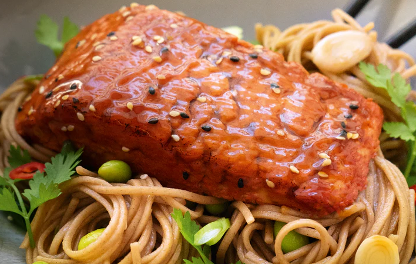

Chamado de The Filet (O Filé, em português), o produto é feito principalmente de micoproteína, uma proteína derivada de fungo filamentoso – portanto é 100% vegano, além de não conter açúcar ou glúten.
Segundo a Revo Foods, a micoproteína usada no The Filet tem textura natural semelhante à carne, demanda mínimo processamento e é mais sustentável por precisar de menos recursos, como água, por exemplo.O ingrediente foi codesenvolvido com a startup sueca Mycorena, e, nesse processo, a base proteica “Promyc” da Mycorena foi projetada especificamente para fins de impressão 3D.
A Revo Foods afirma que, com sua tecnologia 3D-MassFormer, conseguiu desenvolver o primeiro processo capaz de produzir alimentos impressos em 3D em massa, abrindo possibilidades para o mercado de alternativas à carne.
Fundada em 2020, a Revo Foods produz itens inspirados em peixes, como salmão e atum, que são 100% à base de plantas, e se define como uma “companhia de peixes que salva peixes”.

A startup afirma que, até agosto de 2023, 18.908 peixes foram “salvos” por conta de sua produção e alega que seus processos usam 95% menos água e emitem de 77% a 86% menos CO2 que a produção convencional de salmão.
O objetivo da companhia é ajudar a aliviar a pressão sobre o ecossistema marinho por meio da tecnologia e da inovação. A Revo Foods faz parte da rede da EIT Food, organização sem fins lucrativos cofinanciada pela União Europeia.
Disponível em alguns supermercados na Europa, o salmão vegano impresso em 3D também é vendido no site da Revo Foods, com entrega para a Áustria e a Alemanha. O preço de 130 gramas é 6,99 euros (cerca de R$ 36).